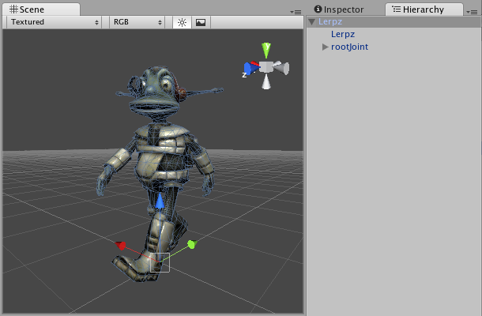
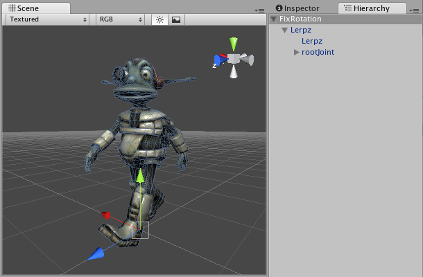

How do I fix the rotation of an imported model?
Some 3D art packages export their models so that the z-axis faces upward. Most of the standard scripts in Unity assume that the y-axis represents up in your 3D world. It is usually easier to fix the rotation in Unity than to modify the scripts to make things fit.

If at all possible it is recommended that you fix the model in your 3D modelling application to have the y-axis face upwards before exporting.
If this is not possible, you can fix it in Unity by adding an extra parent transform:
- Create an empty GameObject using the GameObject->Create Empty menu
- Position the new GameObject so that it is at the center of your mesh or whichever point you want your object to rotate around.
- Drag the mesh onto the empty GameObject
You have now made your mesh a Child of an empty GameObject with the correct orientation. Whenever writing scripts that make use of the y-axis as up, attach them to the Parent empty GameObject.
